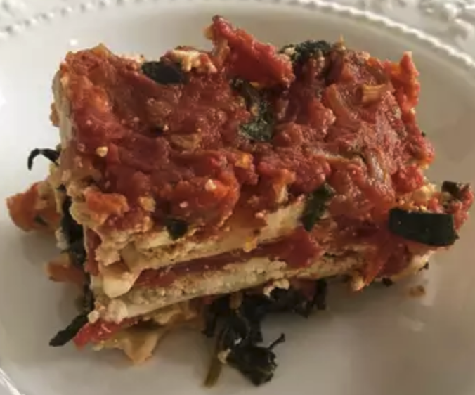

Vegan Lasagna
Home

Description
This lasagna is VERY good and is also a vegan recipe.
Ingredients
- 2 punds firm tofu
- 4 cans stewed tomatoes
- 1 pack lasagna noodles
- 1 1/2 cups chopped onion
Steps
- Make the sauce: In a large, heavy saucepan, over medium heat, heat the olive oil. Place the onions in the saucepan and saute them until they are soft, about 5 minutes. Add the garlic; cook 5 minutes more.
- Place the tomatoes, tomato paste, basil and parsley in the saucepan. Stir well, turn the heat to low and let the sauce simmer covered for 1 hour. Add the salt and pepper.
- While the sauce is cooking bring a large kettle of salted water to a boil. Boil the lasagna noodles for 9 minutes, then drain and rinse well.
- Preheat the oven to 400 degrees F (200 degrees C).